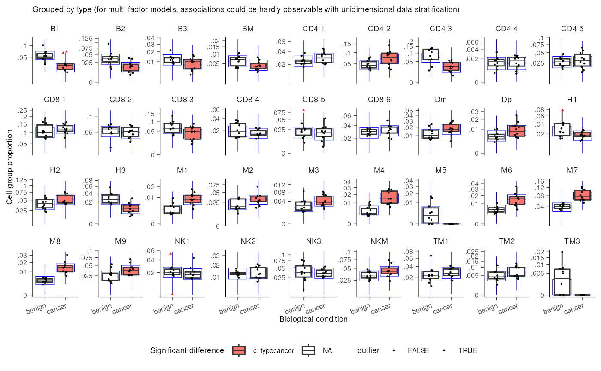
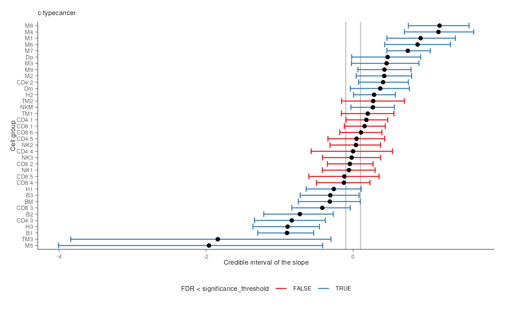
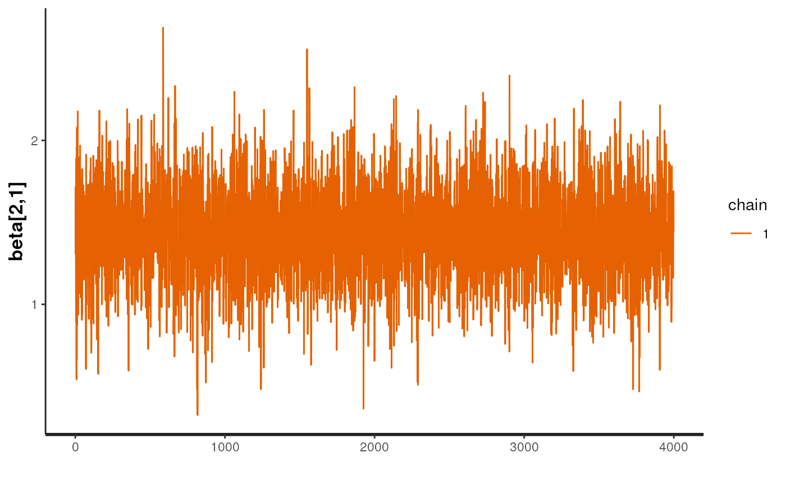

Overview of the sccomp package
Stefano Mangiola
2024-04-29
Source:vignettes/introduction.Rmd
introduction.RmdAbstract
Sccomp is a generalised method for differential composition and variability analyses. It tests differences in cell type proportion, for count data. It is able of flexible continuous/discrete models, removal of unwanted variation, removal of outliers, multilevel random/effect modelling.


Sccomp is a generalised method for differential composition and variability analyses.
Characteristics
- Modelling counts
- Modelling proportionality
- Modelling cell-type specific variability
- Cell-type information share for variability shrinkage
- Testing differential variability
- Probabilistic outlier identification
- Cross-dataset learning (hyperpriors).
Installation
Bioconductor
if (!requireNamespace("BiocManager")) install.packages("BiocManager")
BiocManager::install("sccomp")Github
devtools::install_github("stemangiola/sccomp")Analysis
sccomp can model changes in composition and variability.
By default, the formula for variability is either ~1, which
assumes that the cell-group variability is independent of any covariate
or ~ factor_of_interest, which assumes that the model is
dependent on the factor of interest only. The variability model must be
a subset of the model for composition.
Binary factor
Of the output table, the estimate columns start with the prefix
c_ indicate composition, or with
v_ indicate variability (when
formula_variability is set).
From Seurat, SingleCellExperiment, metadata objects
sccomp_result =
single_cell_object |>
sccomp_estimate(
formula_composition = ~ type,
.sample = sample,
.cell_group = cell_group,
bimodal_mean_variability_association = TRUE,
cores = 1
) |>
sccomp_remove_outliers(cores = 1) |> # Optional
sccomp_test()From counts
sccomp_result =
counts_obj |>
sccomp_estimate(
formula_composition = ~ type,
.sample = sample,
.cell_group = cell_group,
.count = count,
bimodal_mean_variability_association = TRUE,
cores = 1
) |>
sccomp_remove_outliers(cores = 1) |> # Optional
sccomp_test()## Chain 1: ------------------------------------------------------------
## Chain 1: EXPERIMENTAL ALGORITHM:
## Chain 1: This procedure has not been thoroughly tested and may be unstable
## Chain 1: or buggy. The interface is subject to change.
## Chain 1: ------------------------------------------------------------
## Chain 1:
## Chain 1:
## Chain 1:
## Chain 1: Gradient evaluation took 0.000587 seconds
## Chain 1: 1000 transitions using 10 leapfrog steps per transition would take 5.87 seconds.
## Chain 1: Adjust your expectations accordingly!
## Chain 1:
## Chain 1:
## Chain 1: Begin eta adaptation.
## Chain 1: Iteration: 1 / 250 [ 0%] (Adaptation)
## Chain 1: Iteration: 50 / 250 [ 20%] (Adaptation)
## Chain 1: Iteration: 100 / 250 [ 40%] (Adaptation)
## Chain 1: Iteration: 150 / 250 [ 60%] (Adaptation)
## Chain 1: Iteration: 200 / 250 [ 80%] (Adaptation)
## Chain 1: Iteration: 250 / 250 [100%] (Adaptation)
## Chain 1: Success! Found best value [eta = 0.1].
## Chain 1:
## Chain 1: Begin stochastic gradient ascent.
## Chain 1: iter ELBO delta_ELBO_mean delta_ELBO_med notes
## Chain 1: 100 -4891.421 1.000 1.000
## Chain 1: 200 -4373.450 0.559 1.000
## Chain 1: 300 -4167.787 0.389 0.118
## Chain 1: 400 -4027.529 0.301 0.118
## Chain 1: 500 -3953.345 0.244 0.049
## Chain 1: 600 -3885.684 0.206 0.049
## Chain 1: 700 -3839.685 0.179 0.035
## Chain 1: 800 -3814.016 0.157 0.035
## Chain 1: 900 -3784.410 0.141 0.019
## Chain 1: 1000 -3766.615 0.127 0.019
## Chain 1: 1100 -3748.480 0.027 0.017
## Chain 1: 1200 -3738.424 0.016 0.012
## Chain 1: 1300 -3727.991 0.011 0.008 MEDIAN ELBO CONVERGED
## Chain 1:
## Chain 1: Drawing a sample of size 1000 from the approximate posterior...
## Chain 1: COMPLETED.
## Chain 1: ------------------------------------------------------------
## Chain 1: EXPERIMENTAL ALGORITHM:
## Chain 1: This procedure has not been thoroughly tested and may be unstable
## Chain 1: or buggy. The interface is subject to change.
## Chain 1: ------------------------------------------------------------
## Chain 1:
## Chain 1:
## Chain 1:
## Chain 1: Gradient evaluation took 0.000449 seconds
## Chain 1: 1000 transitions using 10 leapfrog steps per transition would take 4.49 seconds.
## Chain 1: Adjust your expectations accordingly!
## Chain 1:
## Chain 1:
## Chain 1: Begin eta adaptation.
## Chain 1: Iteration: 1 / 250 [ 0%] (Adaptation)
## Chain 1: Iteration: 50 / 250 [ 20%] (Adaptation)
## Chain 1: Iteration: 100 / 250 [ 40%] (Adaptation)
## Chain 1: Iteration: 150 / 250 [ 60%] (Adaptation)
## Chain 1: Iteration: 200 / 250 [ 80%] (Adaptation)
## Chain 1: Success! Found best value [eta = 1] earlier than expected.
## Chain 1:
## Chain 1: Begin stochastic gradient ascent.
## Chain 1: iter ELBO delta_ELBO_mean delta_ELBO_med notes
## Chain 1: 100 -3811.443 1.000 1.000
## Chain 1: 200 -3534.541 0.539 1.000
## Chain 1: 300 -3526.073 0.360 0.078
## Chain 1: 400 -3522.602 0.270 0.078
## Chain 1: 500 -3515.808 0.217 0.002 MEDIAN ELBO CONVERGED
## Chain 1:
## Chain 1: Drawing a sample of size 1000 from the approximate posterior...
## Chain 1: COMPLETED.
## Chain 1: ------------------------------------------------------------
## Chain 1: EXPERIMENTAL ALGORITHM:
## Chain 1: This procedure has not been thoroughly tested and may be unstable
## Chain 1: or buggy. The interface is subject to change.
## Chain 1: ------------------------------------------------------------
## Chain 1:
## Chain 1:
## Chain 1:
## Chain 1: Gradient evaluation took 0.000409 seconds
## Chain 1: 1000 transitions using 10 leapfrog steps per transition would take 4.09 seconds.
## Chain 1: Adjust your expectations accordingly!
## Chain 1:
## Chain 1:
## Chain 1: Begin eta adaptation.
## Chain 1: Iteration: 1 / 250 [ 0%] (Adaptation)
## Chain 1: Iteration: 50 / 250 [ 20%] (Adaptation)
## Chain 1: Iteration: 100 / 250 [ 40%] (Adaptation)
## Chain 1: Iteration: 150 / 250 [ 60%] (Adaptation)
## Chain 1: Iteration: 200 / 250 [ 80%] (Adaptation)
## Chain 1: Success! Found best value [eta = 1] earlier than expected.
## Chain 1:
## Chain 1: Begin stochastic gradient ascent.
## Chain 1: iter ELBO delta_ELBO_mean delta_ELBO_med notes
## Chain 1: 100 -9466.188 1.000 1.000
## Chain 1: 200 -2905.502 1.629 2.258
## Chain 1: 300 2339.702 1.833 2.242
## Chain 1: 400 2718.365 1.410 2.242
## Chain 1: 500 2516.492 1.144 1.000
## Chain 1: 600 235.495 2.568 2.242
## Chain 1: 700 1180.584 2.315 1.000
## Chain 1: 800 -947.354 2.307 2.242
## Chain 1: 900 1069.079 2.260 1.886
## Chain 1: 1000 1316.863 2.053 1.886
## Chain 1: 1100 697.300 2.041 1.886 MAY BE DIVERGING... INSPECT ELBO
## Chain 1: 1200 317.202 1.936 1.198 MAY BE DIVERGING... INSPECT ELBO
## Chain 1: 1300 1411.313 1.789 0.889 MAY BE DIVERGING... INSPECT ELBO
## Chain 1: 1400 -762.576 2.060 1.198 MAY BE DIVERGING... INSPECT ELBO
## Chain 1: 1500 2494.403 2.183 1.306 MAY BE DIVERGING... INSPECT ELBO
## Chain 1: 1600 2663.433 1.220 1.198 MAY BE DIVERGING... INSPECT ELBO
## Chain 1: 1700 725.182 1.408 1.306 MAY BE DIVERGING... INSPECT ELBO
## Chain 1: 1800 1360.345 1.230 1.198 MAY BE DIVERGING... INSPECT ELBO
## Chain 1: 1900 2253.368 1.081 0.889 MAY BE DIVERGING... INSPECT ELBO
## Chain 1: 2000 744.798 1.264 1.198 MAY BE DIVERGING... INSPECT ELBO
## Chain 1: 2100 2310.417 1.243 1.198 MAY BE DIVERGING... INSPECT ELBO
## Chain 1: 2200 621.376 1.395 1.306 MAY BE DIVERGING... INSPECT ELBO
## Chain 1: 2300 655.624 1.323 1.306 MAY BE DIVERGING... INSPECT ELBO
## Chain 1: 2400 885.798 1.064 0.678 MAY BE DIVERGING... INSPECT ELBO
## Chain 1: 2500 1225.384 0.961 0.467 MAY BE DIVERGING... INSPECT ELBO
## Chain 1: 2600 -809.764 1.206 0.678 MAY BE DIVERGING... INSPECT ELBO
## Chain 1: 2700 -16.980 5.608 0.678 MAY BE DIVERGING... INSPECT ELBO
## Chain 1: 2800 935.586 5.663 1.018 MAY BE DIVERGING... INSPECT ELBO
## Chain 1: 2900 1277.672 5.650 1.018 MAY BE DIVERGING... INSPECT ELBO
## Chain 1: 3000 1681.268 5.471 0.678 MAY BE DIVERGING... INSPECT ELBO
## Chain 1: 3100 307.709 5.850 1.018 MAY BE DIVERGING... INSPECT ELBO
## Chain 1: 3200 3224.238 5.669 0.905 MAY BE DIVERGING... INSPECT ELBO
## Chain 1: 3300 2403.629 5.698 0.905 MAY BE DIVERGING... INSPECT ELBO
## Chain 1: 3400 347.114 6.264 1.018 MAY BE DIVERGING... INSPECT ELBO
## Chain 1: 3500 2109.195 6.320 1.018 MAY BE DIVERGING... INSPECT ELBO
## Chain 1: 3600 1060.996 6.167 0.988 MAY BE DIVERGING... INSPECT ELBO
## Chain 1: 3700 2522.941 1.556 0.905 MAY BE DIVERGING... INSPECT ELBO
## Chain 1: 3800 2208.428 1.469 0.835 MAY BE DIVERGING... INSPECT ELBO
## Chain 1: 3900 1120.818 1.539 0.905 MAY BE DIVERGING... INSPECT ELBO
## Chain 1: 4000 2248.750 1.565 0.905 MAY BE DIVERGING... INSPECT ELBO
## Chain 1: 4100 3723.472 1.158 0.835 MAY BE DIVERGING... INSPECT ELBO
## Chain 1: 4200 910.170 1.377 0.835 MAY BE DIVERGING... INSPECT ELBO
## Chain 1: 4300 339.658 1.511 0.970 MAY BE DIVERGING... INSPECT ELBO
## Chain 1: 4400 1067.184 0.987 0.835 MAY BE DIVERGING... INSPECT ELBO
## Chain 1: 4500 4118.226 0.977 0.741 MAY BE DIVERGING... INSPECT ELBO
## Chain 1: 4600 3465.167 0.897 0.682 MAY BE DIVERGING... INSPECT ELBO
## Chain 1: 4700 1721.560 0.940 0.741 MAY BE DIVERGING... INSPECT ELBO
## Chain 1: 4800 1291.834 0.960 0.741 MAY BE DIVERGING... INSPECT ELBO
## Chain 1: 4900 -741.074 1.137 0.741 MAY BE DIVERGING... INSPECT ELBO
## Chain 1: 5000 -550.348 1.121 0.741 MAY BE DIVERGING... INSPECT ELBO
## Chain 1: 5100 -1926.296 1.153 0.741 MAY BE DIVERGING... INSPECT ELBO
## Chain 1: 5200 -879.097 0.963 0.741 MAY BE DIVERGING... INSPECT ELBO
## Chain 1: 5300 -701.095 0.821 0.714 MAY BE DIVERGING... INSPECT ELBO
## Chain 1: 5400 221.474 1.169 0.741 MAY BE DIVERGING... INSPECT ELBO
## Chain 1: 5500 -568.733 1.234 1.013 MAY BE DIVERGING... INSPECT ELBO
## Chain 1: 5600 1264.823 1.360 1.191 MAY BE DIVERGING... INSPECT ELBO
## Chain 1: 5700 264.024 1.638 1.389 MAY BE DIVERGING... INSPECT ELBO
## Chain 1: 5800 726.554 1.668 1.389 MAY BE DIVERGING... INSPECT ELBO
## Chain 1: 5900 1807.750 1.454 1.191 MAY BE DIVERGING... INSPECT ELBO
## Chain 1: 6000 1238.488 1.465 1.191 MAY BE DIVERGING... INSPECT ELBO
## Chain 1: 6100 2011.635 1.432 1.191 MAY BE DIVERGING... INSPECT ELBO
## Chain 1: 6200 2137.621 1.319 0.637 MAY BE DIVERGING... INSPECT ELBO
## Chain 1: 6300 1441.622 1.342 0.637 MAY BE DIVERGING... INSPECT ELBO
## Chain 1: 6400 3438.823 0.983 0.598 MAY BE DIVERGING... INSPECT ELBO
## Chain 1: 6500 1255.307 1.018 0.598 MAY BE DIVERGING... INSPECT ELBO
## Chain 1: 6600 -131.083 1.931 0.598 MAY BE DIVERGING... INSPECT ELBO
## Chain 1: 6700 -58.489 1.676 0.598 MAY BE DIVERGING... INSPECT ELBO
## Chain 1: 6800 2316.926 1.715 0.598 MAY BE DIVERGING... INSPECT ELBO
## Chain 1: 6900 1163.554 1.754 0.991 MAY BE DIVERGING... INSPECT ELBO
## Chain 1: 7000 2498.845 1.761 0.991 MAY BE DIVERGING... INSPECT ELBO
## Chain 1: 7100 572.743 2.059 1.025 MAY BE DIVERGING... INSPECT ELBO
## Chain 1: 7200 1927.987 2.124 1.025 MAY BE DIVERGING... INSPECT ELBO
## Chain 1: 7300 2231.369 2.089 1.025 MAY BE DIVERGING... INSPECT ELBO
## Chain 1: 7400 1673.812 2.064 1.025 MAY BE DIVERGING... INSPECT ELBO
## Chain 1: 7500 518.999 2.113 1.025 MAY BE DIVERGING... INSPECT ELBO
## Chain 1: 7600 2436.283 1.134 0.991 MAY BE DIVERGING... INSPECT ELBO
## Chain 1: 7700 2197.541 1.021 0.787 MAY BE DIVERGING... INSPECT ELBO
## Chain 1: 7800 2252.730 0.921 0.703 MAY BE DIVERGING... INSPECT ELBO
## Chain 1: 7900 486.562 1.184 0.703 MAY BE DIVERGING... INSPECT ELBO
## Chain 1: 8000 1386.729 1.196 0.703 MAY BE DIVERGING... INSPECT ELBO
## Chain 1: 8100 846.500 0.923 0.649 MAY BE DIVERGING... INSPECT ELBO
## Chain 1: 8200 1366.006 0.891 0.638 MAY BE DIVERGING... INSPECT ELBO
## Chain 1: 8300 2299.396 0.918 0.638 MAY BE DIVERGING... INSPECT ELBO
## Chain 1: 8400 2330.357 0.886 0.638 MAY BE DIVERGING... INSPECT ELBO
## Chain 1: 8500 41.563 6.170 0.638 MAY BE DIVERGING... INSPECT ELBO
## Chain 1: 8600 -318.317 6.205 0.638 MAY BE DIVERGING... INSPECT ELBO
## Chain 1: 8700 1275.856 6.319 0.649 MAY BE DIVERGING... INSPECT ELBO
## Chain 1: 8800 1644.528 6.339 0.649 MAY BE DIVERGING... INSPECT ELBO
## Chain 1: 8900 1100.184 6.025 0.638 MAY BE DIVERGING... INSPECT ELBO
## Chain 1: 9000 241.909 6.315 0.638 MAY BE DIVERGING... INSPECT ELBO
## Chain 1: 9100 1810.424 6.338 0.866 MAY BE DIVERGING... INSPECT ELBO
## Chain 1: 9200 1728.613 6.305 0.866 MAY BE DIVERGING... INSPECT ELBO
## Chain 1: 9300 2176.903 6.285 0.866 MAY BE DIVERGING... INSPECT ELBO
## Chain 1: 9400 1728.294 6.309 0.866 MAY BE DIVERGING... INSPECT ELBO
## Chain 1: 9500 1942.485 0.814 0.495 MAY BE DIVERGING... INSPECT ELBO
## Chain 1: 9600 2134.864 0.710 0.260 MAY BE DIVERGING... INSPECT ELBO
## Chain 1: 9700 1972.166 0.593 0.224 MAY BE DIVERGING... INSPECT ELBO
## Chain 1: 9800 676.539 0.762 0.260 MAY BE DIVERGING... INSPECT ELBO
## Chain 1: 9900 3170.102 0.791 0.260 MAY BE DIVERGING... INSPECT ELBO
## Chain 1: 10000 1263.247 0.587 0.260 MAY BE DIVERGING... INSPECT ELBO
## Chain 1: Informational Message: The maximum number of iterations is reached! The algorithm may not have converged.
## Chain 1: This variational approximation is not guaranteed to be meaningful.
## Chain 1:
## Chain 1: Drawing a sample of size 1000 from the approximate posterior...
## Chain 1: COMPLETED.Summary plots
plots = sccomp_result |> plot() ## Joining with `by = join_by(cell_group, sample)`
## Joining with `by = join_by(cell_group, type)`A plot of group proportion, faceted by groups. The blue boxplots
represent the posterior predictive check. If the model is likely to be
descriptively adequate to the data, the blue box plot should roughly
overlay with the black box plot, which represents the observed data. The
outliers are coloured in red. A box plot will be returned for every
(discrete) covariate present in formula_composition. The
colour coding represents the significant associations for composition
and/or variability.
plots$boxplot## [[1]]
A plot of estimates of differential composition (c_) on the x-axis and differential variability (v_) on the y-axis. The error bars represent 95% credible intervals. The dashed lines represent the minimal effect that the hypothesis test is based on. An effect is labelled as significant if bigger than the minimal effect according to the 95% credible interval. Facets represent the covariates in the model.
plots$credible_intervals_1D
We can plot the relationship between abundance and variability. As we can see below, they are positively correlated, you also appreciate that this relationship is by model for single cell RNA sequencing data.
sccomp models, these relationship to obtain a shrinkage
effect on the estimates of both the abundance and the variability. This
shrinkage is adaptive as it is modelled jointly, thanks for Bayesian
inference.
plots$credible_intervals_2D
Contrasts
seurat_obj |>
sccomp_estimate(
formula_composition = ~ 0 + type,
.sample = sample,
.cell_group = cell_group,
bimodal_mean_variability_association = TRUE,
cores = 1
) |>
sccomp_test( contrasts = c("typecancer - typehealthy", "typehealthy - typecancer"))## Chain 1: ------------------------------------------------------------
## Chain 1: EXPERIMENTAL ALGORITHM:
## Chain 1: This procedure has not been thoroughly tested and may be unstable
## Chain 1: or buggy. The interface is subject to change.
## Chain 1: ------------------------------------------------------------
## Chain 1:
## Chain 1:
## Chain 1:
## Chain 1: Gradient evaluation took 0.000345 seconds
## Chain 1: 1000 transitions using 10 leapfrog steps per transition would take 3.45 seconds.
## Chain 1: Adjust your expectations accordingly!
## Chain 1:
## Chain 1:
## Chain 1: Begin eta adaptation.
## Chain 1: Iteration: 1 / 250 [ 0%] (Adaptation)
## Chain 1: Iteration: 50 / 250 [ 20%] (Adaptation)
## Chain 1: Iteration: 100 / 250 [ 40%] (Adaptation)
## Chain 1: Iteration: 150 / 250 [ 60%] (Adaptation)
## Chain 1: Iteration: 200 / 250 [ 80%] (Adaptation)
## Chain 1: Success! Found best value [eta = 1] earlier than expected.
## Chain 1:
## Chain 1: Begin stochastic gradient ascent.
## Chain 1: iter ELBO delta_ELBO_mean delta_ELBO_med notes
## Chain 1: 100 -3463.463 1.000 1.000
## Chain 1: 200 -3163.286 0.547 1.000
## Chain 1: 300 -3164.252 0.365 0.095
## Chain 1: 400 -3157.519 0.274 0.095
## Chain 1: 500 -3158.173 0.220 0.002 MEDIAN ELBO CONVERGED
## Chain 1:
## Chain 1: Drawing a sample of size 1000 from the approximate posterior...
## Chain 1: COMPLETED.## # A tibble: 60 × 18
## cell_group parameter factor c_lower c_effect c_upper c_pH0 c_FDR c_n_eff
## <chr> <chr> <chr> <dbl> <dbl> <dbl> <dbl> <dbl> <dbl>
## 1 B immature typecanc… NA -1.94 -1.36 -0.745 0 0 NA
## 2 B immature typeheal… NA 0.745 1.36 1.94 0 0 NA
## 3 B mem typecanc… NA -2.28 -1.64 -1.04 0 0 NA
## 4 B mem typeheal… NA 1.04 1.64 2.28 0 0 NA
## 5 CD4 cm S10… typecanc… NA -1.58 -1.15 -0.769 0 0 NA
## 6 CD4 cm S10… typeheal… NA 0.769 1.15 1.58 0 0 NA
## 7 CD4 cm hig… typecanc… NA 0.595 1.57 2.55 0.00300 8.75e-4 NA
## 8 CD4 cm hig… typeheal… NA -2.55 -1.57 -0.595 0.00300 8.75e-4 NA
## 9 CD4 cm rib… typecanc… NA 0.347 0.939 1.52 0.00400 1.22e-3 NA
## 10 CD4 cm rib… typeheal… NA -1.52 -0.939 -0.347 0.00400 1.22e-3 NA
## # ℹ 50 more rows
## # ℹ 9 more variables: c_R_k_hat <dbl>, v_lower <dbl>, v_effect <dbl>,
## # v_upper <dbl>, v_pH0 <dbl>, v_FDR <dbl>, v_n_eff <dbl>, v_R_k_hat <dbl>,
## # count_data <list>Categorical factor (e.g. Bayesian ANOVA)
This is achieved through model comparison with loo. In
the following example, the model with association with factors better
fits the data compared to the baseline model with no factor association.
For comparisons check_outliers must be set to FALSE as the
leave-one-out must work with the same amount of data, while outlier
elimination does not guarantee it.
If elpd_diff is away from zero of > 5
se_diff difference of 5, we are confident that a model is
better than the other reference.
In this case, -79.9 / 11.5 = -6.9, therefore we can conclude that model
one, the one with factor association, is better than model two.
library(loo)
# Fit first model
model_with_factor_association =
seurat_obj |>
sccomp_estimate(
formula_composition = ~ type,
.sample = sample,
.cell_group = cell_group,
bimodal_mean_variability_association = TRUE,
cores = 1,
enable_loo = TRUE
)
# Fit second model
model_without_association =
seurat_obj |>
sccomp_estimate(
formula_composition = ~ 1,
.sample = sample,
.cell_group = cell_group,
bimodal_mean_variability_association = TRUE,
cores = 1 ,
enable_loo = TRUE
)
# Compare models
loo_compare(
model_with_factor_association |> attr("fit") |> loo(),
model_without_association |> attr("fit") |> loo()
)Differential variability, binary factor
We can model the cell-group variability also dependent on the type, and so test differences in variability
res =
seurat_obj |>
sccomp_estimate(
formula_composition = ~ type,
formula_variability = ~ type,
.sample = sample,
.cell_group = cell_group,
bimodal_mean_variability_association = TRUE,
cores = 1
)## Chain 1: ------------------------------------------------------------
## Chain 1: EXPERIMENTAL ALGORITHM:
## Chain 1: This procedure has not been thoroughly tested and may be unstable
## Chain 1: or buggy. The interface is subject to change.
## Chain 1: ------------------------------------------------------------
## Chain 1:
## Chain 1:
## Chain 1:
## Chain 1: Gradient evaluation took 0.00036 seconds
## Chain 1: 1000 transitions using 10 leapfrog steps per transition would take 3.6 seconds.
## Chain 1: Adjust your expectations accordingly!
## Chain 1:
## Chain 1:
## Chain 1: Begin eta adaptation.
## Chain 1: Iteration: 1 / 250 [ 0%] (Adaptation)
## Chain 1: Iteration: 50 / 250 [ 20%] (Adaptation)
## Chain 1: Iteration: 100 / 250 [ 40%] (Adaptation)
## Chain 1: Iteration: 150 / 250 [ 60%] (Adaptation)
## Chain 1: Iteration: 200 / 250 [ 80%] (Adaptation)
## Chain 1: Iteration: 250 / 250 [100%] (Adaptation)
## Chain 1: Success! Found best value [eta = 0.1].
## Chain 1:
## Chain 1: Begin stochastic gradient ascent.
## Chain 1: iter ELBO delta_ELBO_mean delta_ELBO_med notes
## Chain 1: 100 -4362.156 1.000 1.000
## Chain 1: 200 -3780.244 0.577 1.000
## Chain 1: 300 -3568.887 0.404 0.154
## Chain 1: 400 -3445.120 0.312 0.154
## Chain 1: 500 -3379.177 0.254 0.059
## Chain 1: 600 -3321.402 0.214 0.059
## Chain 1: 700 -3290.427 0.185 0.036
## Chain 1: 800 -3261.035 0.163 0.036
## Chain 1: 900 -3242.879 0.146 0.020
## Chain 1: 1000 -3223.884 0.132 0.020
## Chain 1: 1100 -3214.270 0.032 0.017
## Chain 1: 1200 -3205.477 0.017 0.009 MEDIAN ELBO CONVERGED
## Chain 1:
## Chain 1: Drawing a sample of size 1000 from the approximate posterior...
## Chain 1: COMPLETED.
res## # A tibble: 60 × 14
## cell_group parameter factor c_lower c_effect c_upper c_n_eff c_R_k_hat
## <chr> <chr> <chr> <dbl> <dbl> <dbl> <dbl> <dbl>
## 1 B immature (Interce… NA 0.203 0.746 1.28 NaN 3.56
## 2 B immature typeheal… type 0.336 1.18 2.03 NaN 3.51
## 3 B mem (Interce… NA -1.33 -0.782 -0.245 NaN 3.50
## 4 B mem typeheal… type 0.740 1.53 2.33 NaN 3.51
## 5 CD4 cm S100A4 (Interce… NA 0.935 1.60 2.29 NaN 3.46
## 6 CD4 cm S100A4 typeheal… type -0.434 0.660 1.78 NaN 3.52
## 7 CD4 cm high cyto… (Interce… NA -1.07 -0.399 0.282 NaN 3.50
## 8 CD4 cm high cyto… typeheal… type -1.94 -0.851 0.204 NaN 3.57
## 9 CD4 cm ribosome (Interce… NA -0.257 0.340 0.843 NaN 3.57
## 10 CD4 cm ribosome typeheal… type -1.90 -1.14 -0.348 NaN 3.46
## # ℹ 50 more rows
## # ℹ 6 more variables: v_lower <dbl>, v_effect <dbl>, v_upper <dbl>,
## # v_n_eff <dbl>, v_R_k_hat <dbl>, count_data <list>Suggested settings
For single-cell RNA sequencing
We recommend setting
bimodal_mean_variability_association = TRUE. The
bimodality of the mean-variability association can be confirmed from the
plots$credible_intervals_2D (see below).
For CyTOF and microbiome data
We recommend setting
bimodal_mean_variability_association = FALSE
(Default).
Visualisation of the MCMC chains from the posterior distribution
It is possible to directly evaluate the posterior distribution. In this example, we plot the Monte Carlo chain for the slope parameter of the first cell type. We can see that it has converged and is negative with probability 1.

Plot 1D significance plot
plots = res |> sccomp_test() |> plot()## Joining with `by = join_by(cell_group, sample)`
## Joining with `by = join_by(cell_group, type)`
plots$credible_intervals_1D
Plot 2D significance plot. Data points are cell groups. Error bars are the 95% credible interval. The dashed lines represent the default threshold fold change for which the probabilities (c_pH0, v_pH0) are calculated. pH0 of 0 represent the rejection of the null hypothesis that no effect is observed.
This plot is provided only if differential variability has been
tested. The differential variability estimates are reliable only if the
linear association between mean and variability for
(intercept) (left-hand side facet) is satisfied. A
scatterplot (besides the Intercept) is provided for each category of
interest. The for each category of interest, the composition and
variability effects should be generally uncorrelated.
plots$credible_intervals_2D
## R version 4.4.0 Patched (2024-04-24 r86483)
## Platform: x86_64-pc-linux-gnu
## Running under: Ubuntu 22.04.4 LTS
##
## Matrix products: default
## BLAS: /usr/lib/x86_64-linux-gnu/openblas-pthread/libblas.so.3
## LAPACK: /usr/lib/x86_64-linux-gnu/openblas-pthread/libopenblasp-r0.3.20.so; LAPACK version 3.10.0
##
## locale:
## [1] LC_CTYPE=en_US.UTF-8 LC_NUMERIC=C
## [3] LC_TIME=en_US.UTF-8 LC_COLLATE=en_US.UTF-8
## [5] LC_MONETARY=en_US.UTF-8 LC_MESSAGES=en_US.UTF-8
## [7] LC_PAPER=en_US.UTF-8 LC_NAME=C
## [9] LC_ADDRESS=C LC_TELEPHONE=C
## [11] LC_MEASUREMENT=en_US.UTF-8 LC_IDENTIFICATION=C
##
## time zone: UTC
## tzcode source: system (glibc)
##
## attached base packages:
## [1] stats graphics grDevices utils datasets methods base
##
## other attached packages:
## [1] rstan_2.32.6 StanHeaders_2.32.7 tidyr_1.3.1 forcats_1.0.0
## [5] ggplot2_3.5.1 sccomp_1.7.11 dplyr_1.1.4
##
## loaded via a namespace (and not attached):
## [1] gridExtra_2.3 inline_0.3.19
## [3] rlang_1.1.3 magrittr_2.0.3
## [5] matrixStats_1.3.0 compiler_4.4.0
## [7] loo_2.7.0 systemfonts_1.0.6
## [9] vctrs_0.6.5 stringr_1.5.1
## [11] pkgconfig_2.0.3 crayon_1.5.2
## [13] fastmap_1.1.1 XVector_0.43.1
## [15] labeling_0.4.3 utf8_1.2.4
## [17] rmarkdown_2.26 tzdb_0.4.0
## [19] UCSC.utils_0.99.7 ragg_1.3.0
## [21] purrr_1.0.2 xfun_0.43
## [23] zlibbioc_1.49.3 cachem_1.0.8
## [25] GenomeInfoDb_1.39.14 jsonlite_1.8.8
## [27] highr_0.10 DelayedArray_0.29.9
## [29] parallel_4.4.0 R6_2.5.1
## [31] RColorBrewer_1.1-3 bslib_0.7.0
## [33] stringi_1.8.3 parallelly_1.37.1
## [35] boot_1.3-30 GenomicRanges_1.55.4
## [37] jquerylib_0.1.4 Rcpp_1.0.12
## [39] SummarizedExperiment_1.33.3 knitr_1.46
## [41] future.apply_1.11.2 readr_2.1.5
## [43] IRanges_2.37.1 Matrix_1.7-0
## [45] tidyselect_1.2.1 abind_1.4-5
## [47] yaml_2.3.8 codetools_0.2-20
## [49] curl_5.2.1 listenv_0.9.1
## [51] pkgbuild_1.4.4 lattice_0.22-6
## [53] tibble_3.2.1 withr_3.0.0
## [55] Biobase_2.63.1 evaluate_0.23
## [57] future_1.33.2 desc_1.4.3
## [59] RcppParallel_5.1.7 pillar_1.9.0
## [61] MatrixGenerics_1.15.1 stats4_4.4.0
## [63] generics_0.1.3 sp_2.1-3
## [65] S4Vectors_0.41.7 hms_1.1.3
## [67] rstantools_2.4.0 munsell_0.5.1
## [69] scales_1.3.0 globals_0.16.3
## [71] glue_1.7.0 tools_4.4.0
## [73] fs_1.6.4 dotCall64_1.1-1
## [75] grid_4.4.0 QuickJSR_1.1.3
## [77] colorspace_2.1-0 SingleCellExperiment_1.25.1
## [79] GenomeInfoDbData_1.2.12 patchwork_1.2.0
## [81] cli_3.6.2 textshaping_0.3.7
## [83] spam_2.10-0 fansi_1.0.6
## [85] S4Arrays_1.3.7 V8_4.4.2
## [87] gtable_0.3.5 sass_0.4.9
## [89] digest_0.6.35 progressr_0.14.0
## [91] BiocGenerics_0.49.1 SparseArray_1.3.5
## [93] ggrepel_0.9.5 farver_2.1.1
## [95] htmlwidgets_1.6.4 SeuratObject_5.0.1
## [97] memoise_2.0.1 htmltools_0.5.8.1
## [99] pkgdown_2.0.9 lifecycle_1.0.4
## [101] prettydoc_0.4.1 httr_1.4.7